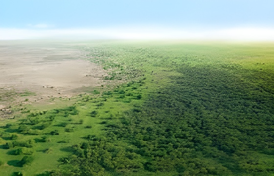

Lancée en 2007 par l'Union africaine, la Grande Muraille Verte ambitionne de dresser une barrière végétale de 8 000 kilomètres contre l'avancée du désert, du Sénégal à Djibouti. Presque deux décennies plus tard, le projet n'est achevé qu'à 20 % de ses objectifs. Entre promesses financières non honorées, conflits armés, sécheresses et succès locaux remarquables, l'initiative illustre à la fois l'urgence du défi sahélien et les limites d'une gouvernance internationale fragmentée.
L'idée germe en 2002 lors du Sommet de N'Djaména, au Tchad, consacré à la lutte contre la désertification. Elle est formalisée en 2005 à Ouagadougou, puis approuvée officiellement le 29 janvier 2007 à Addis-Abeba par les dirigeants de l'Union africaine. Le concept initial est presque naïf dans sa clarté : planter une bande d'arbres de 15 kilomètres de large et de 7 800 kilomètres de long le long de la frontière sud du Sahara, de l'Atlantique à la mer Rouge. Onze pays fondateurs s'engagent — Sénégal, Mauritanie, Mali, Burkina Faso, Niger, Nigeria, Tchad, Soudan, Érythrée, Éthiopie et Djibouti.
L'urgence est réelle. Le Sahara, deuxième plus grand désert du monde, exerce une pression constante sur la frange sahélienne. La désertification, combinée au surpâturage, à la déforestation et aux effets du changement climatique, dégrade chaque année des millions d'hectares de terres agricoles. La zone sahélo-saharienne concentre certains des indices de développement humain les plus bas de la planète : pauvreté chronique, insécurité alimentaire, migrations forcées et, de plus en plus, terreau fertile pour l'extrémisme armé.
Sommet de N'Djaména : l'idée d'un grand projet de verdissement du Sahel émerge dans les discussions africaines sur la désertification. Le président nigérian Olusegun Obasanjo en est souvent cité comme l'un des initiateurs.
La 7e conférence des dirigeants de la Communauté des États sahélo-sahariens à Ouagadougou valide officiellement le concept. Le président sénégalais Abdoulaye Wade popularise l'expression « Grande Muraille Verte ».
Lancement officiel à Addis-Abeba par les chefs d'État de l'Union africaine. Création de l'Agence panafricaine de la Grande Muraille Verte (APGMV), basée à Nouakchott (Mauritanie).
Mise en œuvre lente et inégale selon les pays. Le Sénégal et l'Éthiopie enregistrent les progrès les plus tangibles. En 2020, la CNULCD constate que seulement environ 18 % des objectifs sont atteints en superficie restaurée, contre les 100 millions d'hectares visés pour 2030.
One Planet Summit de Paris : le président Macron lance l'Accélérateur de la GMV. Près de 19,6 milliards de dollars sont promis par les partenaires internationaux pour la période 2021–2025. L'AFD s'engage à hauteur de 600 millions d'euros sur cinq ans.
Selon les données disponibles, seulement 2,5 milliards des 14,3 milliards de nouveaux financements promis en 2021 ont effectivement été versés, soulignant le fossé persistant entre les annonces et les décaissements réels.
Mission conjointe de haut niveau de la Banque africaine de développement et du Programme alimentaire mondial à l'APGMV à Nouakchott, pour renforcer le partenariat stratégique en faveur de la résilience du Sahel.
Au Sénégal, l'Agence sénégalaise de la reforestation et de la grande muraille verte (ASERGMV) coordonne un programme intégrateur sur un tracé de 545 km de long pour 15 km de large, soit quelque 817 500 hectares. Les résultats y sont parmi les plus visibles du continent, avec des zones de régénération naturelle assistée qui montrent une reprise notable du couvert végétal. À Koyli Alpha, dans le nord du pays, les habitants témoignent d'une transformation qui dépasse le simple reboisement, avec la création de puits, d'écoles et de formations agricoles venues avec les projets.
L'Éthiopie s'est distinguée par des campagnes massives de plantation : en 2019, le pays a lancé la campagne « Green Legacy » visant à planter des milliards d'arbres, dépassant officiellement les 20 milliards de plants en quelques années. Si les chiffres ont parfois été contestés dans leur mode de comptabilisation, la dynamique politique et communautaire autour de la restauration des terres est indéniable, et l'Éthiopie est citée par la CNULCD comme l'un des pays où les progrès de la GMV sont les plus visibles.
Les chiffres sont sans appel. Entre 2007 et 2020, environ 17 à 20 millions d'hectares ont été restaurés selon les estimations de l'AFD et de la BAD, sur les 100 millions visés à l'horizon 2030. La CNULCD estime que seulement 15 % de la muraille est véritablement achevée, principalement au Sénégal et en Éthiopie. En matière d'emploi, quelque 350 000 emplois ont été créés — chiffre tangible mais qui représente moins de 4 % des 10 millions d'emplois promis.
Le Forum économique mondial a rappelé en 2024 cet écart abyssal. Les chercheurs soulignent un double problème méthodologique : les gouvernements ont longtemps calculé l'avancement sur la base du nombre d'arbres plantés, et non de la survie à long terme de ces plants. Des images satellites révèlent que là où des arbres ont bien été plantés, les taux de survie sont souvent insuffisants — les plants meurent lors des sécheresses ou sont mangés par le bétail en l'absence de clôtures.
« Après deux décennies, même en tenant compte du fait que tout l'argent promis ne s'est pas matérialisé, les résultats devraient être visibles. »
— Chercheurs publiés dans The Conversation, octobre 2025Le premier obstacle est financier. L'effort requis est colossal : selon le secrétariat de la CNULCD, mobiliser au moins 33 milliards de dollars supplémentaires est nécessaire, en plus des 14 milliards initialement prévus, pour atteindre les objectifs 2030. Or, les promesses peinent à se transformer en décaissements : sur les 14,3 milliards annoncés lors de l'Accélérateur de 2021, seulement 2,5 milliards étaient versés en mars 2023.
Le deuxième frein est sécuritaire. La bande sahélienne traversée par la GMV est précisément la zone où l'instabilité est maximale. Le Mali, le Burkina Faso, le Niger — dont les juntes se sont retirées du G5 Sahel — sont devenus des zones de guerre contre les groupes djihadistes affiliés à Al-Qaïda ou à l'État islamique. Dans ces pays, les projets de reboisement sont soit à l'arrêt, soit impossibles à superviser. Le Tchad, le Soudan — en guerre civile depuis 2023 — et l'Érythrée présentent des situations similaires.
Les études de terrain dressent un constat nuancé. Là où les communautés sont associées à la conception des projets — et non simplement mobilisées pour planter —, les résultats sont durables. Au Niger, la pratique de la régénération naturelle assistée (RNA) s'est imposée comme une réussite exemplaire : au lieu de planter de nouveaux arbres, les paysans protègent et entretiennent les repousses naturelles déjà présentes dans le sol. Cette technique peu coûteuse, développée depuis les années 1980, a permis de restaurer des millions d'hectares dans les régions de Zinder et de Maradi. Les « demi-lunes » — petites cuvettes en forme de croissant creusées dans le sol pour capter les eaux de pluie — constituent une autre innovation locale très efficace.
Les experts s'accordent désormais sur une approche multi-sectorielle : les projets les plus réussis ne se limitent pas aux arbres, mais combinent agroforesterie, gestion de l'eau, élevage raisonné, et diversification des revenus. La GMV, dans sa version actuelle, est moins un mur que 5 piliers d'intervention : investissement agricole, restauration des terres, énergie renouvelable, emploi des jeunes et gouvernance des ressources naturelles.
| Pays | Avancement estimé | Points forts | Obstacles |
|---|---|---|---|
| Sénégal | Avancé | Gouvernance, RNA, pépinières | Manque d'eau, entretien |
| Éthiopie | Avancé | Campagnes nationales massives | Taux de survie des plants |
| Niger | Partiel | RNA, demi-lunes, communautés | Insécurité nord du pays |
| Nigeria | Partiel | Investissements verts, IDE | Coordination insuffisante |
| Mali | Bloqué | Potentiel agro-sylvopastoral | Conflit armé généralisé |
| Burkina Faso | Bloqué | Savoir-faire local (zaï) | Insécurité, junte, retrait partenaires |
| Soudan | Bloqué | — | Guerre civile depuis 2023 |
Avec quatre ans à peine avant l'échéance de 2030, la quasi-totalité des observateurs s'accorde à dire que les 100 millions d'hectares ne seront pas restaurés à temps. Mais l'AFD, la BAD et les chercheurs de l'IRD insistent sur un point crucial : la GMV n'est pas un projet à évaluer sur un seul critère de surface. Les 350 000 emplois créés, la réduction de la vulnérabilité alimentaire dans certaines zones, le maintien de populations rurales qui auraient sinon migré, ou encore la contribution à la séquestration de carbone constituent des bénéfices réels, même si difficilement quantifiables à l'échelle du continent.
L'initiative de l'Accélérateur, lancée en 2021, a introduit un système de suivi par satellite et d'indicateurs de résultats — et non plus de simples comptages d'arbres — qui devrait permettre une mesure plus honnête des progrès. La BAD a engagé 6,5 milliards de dollars à travers cinq piliers de l'Accélérateur. Si ces financements se concrétisent, la dynamique pourrait significativement s'accélérer dans la seconde moitié de la décennie.
La Grande Muraille Verte n'est pas le rempart parfait qu'on avait rêvé. C'est une initiative en construction permanente, minée par les conflits qui déchirent précisément les pays qu'elle veut protéger, ralentie par des financements internationaux qui restent plus promesses que réalités, et confrontée à un défi climatique qui s'aggrave plus vite que la végétation ne repousse. Mais là où elle fonctionne — au Sénégal, au Niger, en Éthiopie —, elle démontre qu'une autre trajectoire est possible pour le Sahel. Moins spectaculaire qu'un mur, plus solide qu'un symbole : la GMV est peut-être la reformulation la plus honnête de ce que peut être la coopération africaine face à l'urgence écologique.